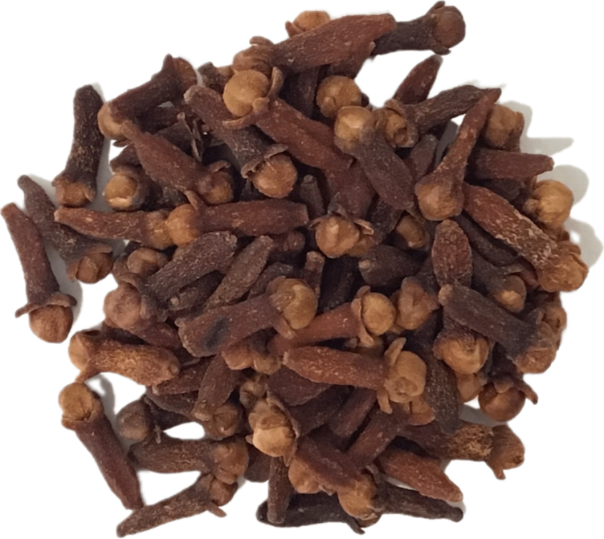

Syzygium aromaticum
Overview
Cloves are the aromatic flower buds of the clove tree, native to the Maluku Islands in Indonesia. They have a strong, pungent flavor with warm, sweet notes and are commonly used as a spice in cooking and baking. Cloves are also known for their medicinal properties and have been used for centuries in traditional medicine.
Cultural Overlap
Cloves are used in cuisines worldwide, particularly in Indian, Chinese, and Middle Eastern cuisines. They are used whole or ground to add flavor to savory dishes such as curries, soups, and rice dishes, as well as sweets and baked goods. Cloves have cultural significance in various traditions and ceremonies and are often used in potpourri and aromatherapy.